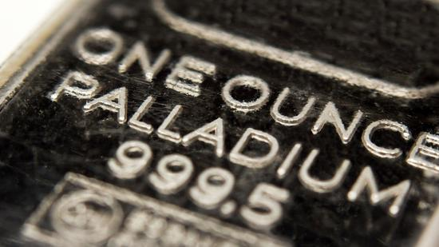

钯金期货大涨4.6% 中国汽车销售强劲推动
大宗商品信息网 11月16日讯
北京时间11日凌晨，钯金期货价格周三创一年多来收盘新高。中国车辆销售强劲增长意味着汽车制造业对这种金属的需求大幅提升。

美元汇率走软，使以美元计价的金属价格普遍得到支撑。
随着一些交易商预计亚洲对黄色贵金属的需求可能提高，黄金与白银期货价格连续第二个交易日上涨。
纽约商品交易所9月份交割的钯金期货价格跃升32.05美元，或4.6%，收于每盎司726.40美元，为2015年7月中旬以来的最高收盘价。今年至今钯金期货价格已经上涨超过30%。
钯金的同族金属——铂金同样上涨，10月铂金期货上涨23.20美元，或2%，收于每盎司1183.10美元。
12月交割的黄金期货价格上涨5.20美元，或0.4%，收于每盎司1351.90美元。9月白银期货上涨32美分，或1.6%，收于每盎司20.17美元。
Libertas Wealth Management Group总裁亚当-库斯（Adam Koos）表示，贵金属期货价格上涨的另一个原因是空头回补。
据道琼斯新闻报道，中国6月份的汽车市场增长速度创半年以来新高。这意味着用于生产汽车零部件的钯金与铂金需求将会提高。
(来源：网易财经 )